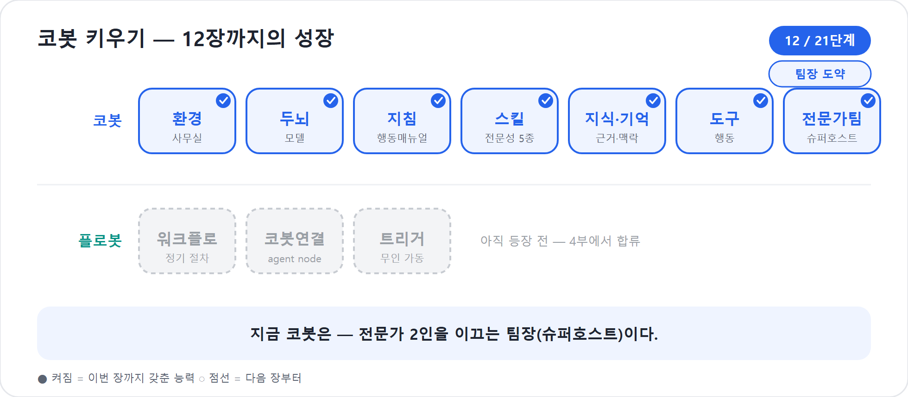

12장. 후배가 생긴 코봇 — 슈퍼호스트로의 도약
3부 「가르친다」의 정점. 한 코봇 안의 다섯 모자에서, 전문가 에이전트를 연결해 지휘하는 팀장으로.
9장에서 코봇은 다섯 개의 Skill을 배웠다.
project-planner, schedule-designer,
budget-resource, risk-checker,
reporter라는 모자를 바꿔 쓰며 한 사람이 한 팀처럼 일했다.
10장에서는 회사 자료와 기억을 얻었고, 11장에서는 도구라는 손발까지
달았다. 이제 코봇은 프로젝트를 꽤 훌륭하게 운영한다.
그런데 능력이 늘수록 새로운 문제가 생긴다. 한 명의 신입에게 기획, 일정, 예산, 리스크, 보고, 문서 저장, 알림 발송, 승인 요청까지 모두 맡기면 언젠가 과부하가 온다. 더구나 예산은 재무팀이, 리스크는 PMO가 직접 소유하고 싶은 전문 영역이다. 능력을 다는 일의 마지막 단계는 역설적이게도 혼자 다 짊어지지 않게 하는 것이다. 12장에서 코봇은 후배 전문가를 들이고, 팀을 지휘하는 슈퍼호스트(superhost)로 도약한다.
이것은 코봇의 첫 승진이라 할 만하다. 입사해 모자를 바꿔 쓰며 혼자 일하던 신입이, 후배 전문가에게 일을 맡기고 결과를 종합하는 팀장이 되는 자리이기 때문이다. 그리고 코봇은 이제 혼자가 아니다. 곧 전문가 에이전트(3부)를 후배로 두고, 4부에서는 정해진 절차를 어김없이 도는 플로봇까지 파트너로 거느린다. 능력의 정점은 더 많은 일을 직접 해내는 것이 아니라, 좋은 팀을 거느리는 데 있다.
혼자서는 버거워지는 순간
처음에는 다섯 모자가 매력적이었다. 사용자가 “워크숍 프로젝트 시작해줘”라고 말하면 코봇은 기획자 모자를 쓰고 범위를 잡았다. 이어 일정 설계자, 예산 담당, 리스크 관리자, 보고 담당으로 자연스럽게 넘어갔다. 한 사람 안에 작은 프로젝트팀이 들어 있는 느낌이었다.
하지만 프로젝트가 커지면 문제가 보인다. 리스크 점검을 부탁했는데 예산 이야기를 길게 늘어놓거나, 예산 산정을 요청했는데 기획 범위부터 다시 캐묻는 일이 생긴다. 이상한 일이 아니다. 한 머릿속에 너무 많은 전문성과 도구, 지식 소스가 얹히면 무엇을 꺼내야 할지 고르는 일 자체가 무거워진다.
소유권 문제도 생긴다. 예산 산정 기준은 재무팀이 관리해야 한다. 리스크 평가 기준은 PMO가 바꾸고 싶어 한다. 그런데 이 전문성이 코봇 안의 Skill로만 들어 있으면, 재무팀은 코봇 전체를 건드려야 예산 기준을 고칠 수 있다. 옆 부서가 예산 담당만 재사용하고 싶어도 코봇을 통째로 데려가야 한다.
신입 시절에는 모자를 바꿔 쓰는 것으로 충분했다. 일이 커지면 사람을 늘려야 한다. 코봇에게도 후배가 필요해진다.
스킬로 둘까, 에이전트로 뺄까
모든 Skill을 독립 에이전트로 분화할 필요는 없다. 분화는 멋이 아니라 필요다. 작고 자주 쓰이며 본체와 같은 권한·정책으로 움직이면 Skill로 두는 편이 단순하다. 반대로 별도 소유자, 별도 지식, 별도 도구, 별도 배포 주기가 생기면 에이전트로 빼는 편이 낫다.
| 신호 | Skill로 충분 | 독립 에이전트로 분화 |
|---|---|---|
| 책임 소재 | 코봇 작성자가 함께 관리 | 재무팀, PMO처럼 다른 팀이 소유 |
| 재사용 | 이 코봇 안에서 주로 사용 | 여러 에이전트가 독립적으로 호출 |
| 복잡도 | 한 문서·한 절차의 전문성 | 자체 지식·도구·다단계 판단 필요 |
| 권한 경계 | 코봇과 같은 데이터 범위 | 별도 데이터·연결·승인 경계 필요 |
| 변경 주기 | 본체와 함께 수정 | 독립적으로 자주 개선·배포 |
| 사용자 접점 | 코봇 뒤에서만 충분 | 사용자가 직접 전문가와 대화할 가치 있음 |
이 잣대를 코봇의 다섯 모자에 대보자. project-planner와
schedule-designer는 아직 코봇 안에 있어도 된다. 프로젝트
운영의 공통 흐름이고, 코봇이 전체 맥락을 잡는 데 도움이 된다.
reporter도 코봇이 결과를 종합하는 마지막 목소리이므로
본체에 남기는 편이 자연스럽다.
반면 budget-resource와 risk-checker는
다르다. 예산은 재무 정책, 단가표, 승인 한도, 비용 코드 같은 별도 지식과
도구가 필요하다. 리스크는 PMO의 위험 분류, 감사 기준, 대응 템플릿,
리스크 레지스터 시스템과 연결된다. 두 영역 모두 다른 팀이 소유하고 싶어
하며, 여러 프로젝트 에이전트가 재사용할 수 있다. 그래서 우리는 이 둘을
독립 전문가 에이전트로 분화한다.
정정된 연결
러닝 예제 자산인skills-cobot.md의 끝에는 예전 구조를 따라 “18장에서 전문가 에이전트로 분화”라는 오래된 참조가 남아 있다. 책 구조가 6부 21장으로 재편되면서 이 분화는 이제 12장의 내용이다. 이 장이 바로 다섯 모자 중 일부를 전문가 에이전트로 떼어내는 자리다.
코봇 한마디
"모든 모자를 독립 에이전트로 떼어낼 필요는 없어요. 책임과 지식, 도구, 권한이 따로 움직여야 할 때 비로소 후배 전문가로 키우면 됩니다!"
후배를 맞이하는 법 — Connected agents
분화한 전문가를 코봇과 다시 잇는 장치가 Connected agents(전문가를 팀원처럼 불러 쓰는 기능, 옛 child agent를 대체)다. 신버전 Copilot Studio의 Build 탭에는 지침, 지식, 도구, 스킬, 모델과 함께 Connected agents가 핵심 구성요소로 놓인다. 코봇은 사용자와 대화하는 주 에이전트이고, 예산 담당 에이전트와 리스크 분석가 에이전트는 연결된 전문가다.
2026년 기준 이 책의 범위에서는 Connected agents를 Copilot Studio 에이전트끼리 연결하는 방식으로 다룬다. Microsoft Foundry, Microsoft 365 Agents SDK, A2A 같은 외부 에이전트 연결은 공개 미리보기나 향후 확장으로 소개되고 있지만, 3부의 슈퍼호스트 설계에서는 GA 기준의 안전한 핵심 경로에 집중한다. 클래식의 child agent 개념은 옛 방식으로만 언급한다.
Connected agents를 붙이는 흐름은 다음처럼 생각할 수 있다.
- 먼저 독립 전문가 에이전트를 만든다. 예:
budget-agent,risk-agent. - 각 전문가에게 자기 지침, 지식, 도구를 준다. 예산 담당은 재무 정책과 예산 API, 리스크 담당은 PMO 리스크 템플릿과 리스크 레지스터를 가진다.
- 코봇의 Build 탭에서 Connected agents 구성요소를 연다.
- Add an agent를 선택하고 같은 환경의 Copilot Studio 에이전트를 연결한다.
- 연결된 에이전트의 이름과 설명을 구체적으로 쓴다. 설명은 코봇이 “언제 이 전문가를 불러야 하는지” 판단하는 호출벨이다.
- Preview에서 예산·리스크 질문을 던지고, 코봇이 적절한 전문가에게 위임하는지 확인한다.
- Evaluate와 Monitor는 5부와 6부에서 다루되, 여기서는 호출 여부와 결과 품질을 먼저 본다.
이때 설명은 또 한 번 중요하다. budget-agent의 설명이
“프로젝트를 도와준다”이면 코봇은 언제 불러야 할지 모른다. “프로젝트
일정과 작업 범위를 바탕으로 원화 예산, 비용 코드, 예비비, 승인 한도
검토를 수행한다. 사용자가 예산·비용·리소스·승인 한도를 묻거나 예산안
산출이 필요할 때 사용한다.”처럼 써야 한다.
옛 child agent와 무엇이 다른가
클래식에도 하위 에이전트처럼 보이는 개념이 있었다. 그러나 이 책은 신버전만 다룬다. 옛 방식은 토픽과 노드, 특정 흐름 안에서 하위 대상을 부르는 사고방식에 가까웠다. 새 경험의 슈퍼호스트는 다르게 생각한다. 코봇이 자연어 지침과 향상된 오케스트레이션으로 전체 맥락을 잡고, 필요한 때 전문가 에이전트를 선택해 일을 맡기며, 결과를 다시 종합한다.
중요한 것은 “불렀다”가 아니라 맥락을 들고 지휘한다는 점이다. 리스크 분석가를 부를 때 코봇은 “리스크 봐줘”라고 빈손으로 보내지 않는다. 프로젝트 목적, 일정, 예산, 이해관계자, 지금까지 나온 산출물을 함께 넘겨야 한다. 그래야 리스크 분석가는 “강사 섭외 지연”, “장소 수용 인원 부족”, “예산 승인 지연” 같은 구체적 위험을 짚는다.
슈퍼호스트는 단순한 전달자가 아니다. 전문가의 답을 그대로 붙여넣는 사람도 아니다. 전문가에게 일을 나누고, 서로의 결과가 충돌하지 않는지 보고, 사용자에게 하나의 일관된 답으로 합쳐 내는 팀장이다.
현장에서
연결된 에이전트를 붙였는데 답이 산만하다면, 전문가 문제가 아니라 슈퍼호스트 지침 문제일 수 있다. 코봇의 지침에 “전문가 답을 받은 뒤 중복을 제거하고, 충돌이 있으면 사용자에게 확인 질문을 하며, 최종 답은 하나의 프로젝트 관점으로 통합한다”는 규칙을 넣어야 한다.
코봇의 팀을 설계한다
우리 프로젝트 운영 코봇은 다음 구조로 발전한다.
사용자
↓
코봇(superhost)
├─ Skill: project-planner
├─ Skill: schedule-designer
├─ Skill: reporter
├─ Connected agent: budget-agent
└─ Connected agent: risk-agentbudget-agent는 재무팀 소유다. 예산 정책 문서를
Knowledge로 갖고, 비용 코드 Dataverse 테이블을 읽고, 필요하면 예산 검토
Workflow를 Tool로 호출한다. risk-agent는 PMO 소유다. 리스크
분류표와 과거 회고를 Knowledge로 갖고, 리스크 레지스터 시스템에 항목을
등록하는 Tool을 가진다. 코봇은 둘을 직접 관리하지 않는다. 대신 언제
부를지 알고, 결과를 받아 프로젝트 흐름에 맞게 종합한다.
예를 들어 사용자가 말한다.
“80명 워크숍 프로젝트를 시작하고, 예산과 주요 리스크까지 한 번에 보고해줘.”
코봇은 먼저 project-planner Skill로 목표와 범위를
잡는다. 이어 schedule-designer로 일정 초안을 만든다. 예산이
필요해지는 순간 budget-agent에게 일정과 범위를 넘긴다.
리스크가 필요해지는 순간 risk-agent에게 같은 맥락과 예산
결과를 넘긴다. 마지막으로 reporter Skill을 써서
기획·일정·예산·리스크를 한 장짜리 상태보고서로 묶는다.
사용자는 여전히 코봇 한 명과 대화한다. 그러나 무대 뒤에서는 세 사람이 일한다. 코봇, 예산 담당, 리스크 분석가다. 이것이 슈퍼호스트 패턴이다.
더 보기 — 분화하기 좋은 전문가 에이전트의 예시 목록은 부록 E의 E8 「Connected agents 카탈로그」에 있다. 자기 조직에서 무엇을 전문가로 뗄지 고를 때 참고한다.
코봇 한마디
"슈퍼호스트가 된 저는 빈손으로 후배를 부르지 않아요. 프로젝트 맥락을 챙겨 보내고, 돌아온 답을 하나의 결정 자료로 묶는 팀장 역할을 합니다!"
단일 창구형과 직접 호출형
전문가 에이전트를 연결하면 사용자 경험도 선택해야 한다. 사용자가 늘 코봇하고만 대화하게 할 것인가, 아니면 전문가를 직접 부를 수 있게 할 것인가.
| 방식 | 장점 | 주의할 점 | 어울리는 상황 |
|---|---|---|---|
| 단일 창구형 | 사용자는 코봇 하나만 기억하면 된다. 답이 통합되어 보인다. | 코봇의 위임 설명과 종합 지침이 좋아야 한다. | 일반 직원용 프로젝트 도우미, 경영진 보고 지원 |
| 직접 호출형 | 사용자가 특정 전문가와 깊이 파고들 수 있다. 책임이 투명하다. | 사용자가 어떤 전문가를 불러야 하는지 알아야 한다. | PMO, 재무팀, 숙련 사용자용 분석 환경 |
초보자에게는 단일 창구형이 낫다. “코봇에게 말하면 알아서 전문가를
부른다”는 경험이 단순하기 때문이다. 하지만 재무팀 담당자가 예산 규칙만
깊게 검토해야 한다면 budget-agent를 직접 사용할 가치가
있다. 중요한 것은 어느 쪽이든 전문가의 책임과 데이터 경계를 분명히 하는
것이다.
너무 많이 연결하면 팀이 아니라 시장이 된다
Connected agents는 강력하지만 만능 처방은 아니다. Microsoft Learn의 다중 에이전트 설계 문서는 도구, 토픽, 다른 에이전트 같은 선택지가 너무 많아지면 주 에이전트가 적절한 대상을 고르는 성능이 떨어질 수 있다고 경고한다. 문서는 경험칙으로 30~40개 선택지 근처에서 저하가 생길 수 있다고 설명하지만, 숫자 자체보다 원리가 중요하다. 비슷한 설명의 도구와 에이전트가 많아질수록 오케스트레이터는 헷갈린다.
그래서 슈퍼호스트 설계의 목표는 많이 붙이는 것이 아니라 잘 나누는 것이다. 코봇에게 전문가 열 명을 무작정 붙이면 팀장이 아니라 북적이는 시장이 된다. 각 전문가의 이름, 설명, 책임, 입력, 출력이 겹치지 않아야 한다.
| 안티패턴 | 증상 | 고치는 법 |
|---|---|---|
| 전문가 과분할 | 비슷한 에이전트가 많아 호출이 흔들림 | 책임 단위가 겹치는 전문가를 합친다 |
| 설명 복붙 | 모든 전문가 설명이 “프로젝트 지원” | 호출 상황과 산출물을 구체적으로 나눈다 |
| 슈퍼호스트 부재 | 전문가 답을 그대로 나열 | 코봇 지침에 종합·충돌 해결 규칙을 둔다 |
| 권한 뒤섞임 | 전문가가 불필요한 데이터까지 접근 | 각 에이전트의 Knowledge와 Tool 권한을 최소화 |
| 테스트 생략 | 연결은 됐지만 언제 호출되는지 모름 | Preview에서 대표 질문으로 호출 경로를 확인 |
팁
Connected agents를 붙이기 전에 먼저 Skill과 Tool 설명을 다듬어 보자. 설명만 정리해도 충분히 해결되는 문제라면 굳이 에이전트를 늘리지 않는다. 분화는 마지막 수단이 아니라, 책임과 재사용이 분명해졌을 때의 자연스러운 다음 단계다.
전문가 에이전트의 작은 설계서
독립 에이전트로 분화할 때는 기존 Skill 본문을 버리지 않는다. 오히려
그 Skill이 전문가 에이전트의 씨앗이 된다. budget-resource
Skill을 budget-agent로 키우는 설계서는 다음처럼 시작할 수
있다.
# budget-agent 설계 요약
## 역할
프로젝트 일정·범위·자원 정보를 바탕으로 원화 예산안, 비용 코드, 예비비, 승인 한도 검토를 수행하는 재무 전문가 에이전트.
## 주요 지식
- 재무팀 예산 산정 정책
- 과거 워크숍 예산 집행 내역
- 비용 코드 Dataverse 테이블
## 주요 도구
- 비용 코드 조회 도구
- 예산안 초안 저장 도구
- 예산 검토 Workflow 호출 도구
## 호출 신호
- 사용자가 예산, 비용, 단가, 인력, 리소스, 승인 한도, 예비비를 묻는다.
- 코봇이 프로젝트 일정표를 만든 뒤 예산 산정이 필요하다고 판단한다.
## 출력
- 항목·수량·단가·합계·근거·예비비가 포함된 예산안
- 승인 필요 여부와 다음 조치risk-agent도 같은 방식으로 만든다.
risk-checker Skill의 절차를 가져와, PMO 지식과 리스크
레지스터 도구를 붙인다. 기존 마크다운 자산이 독립 에이전트의 지침과
Skill로 재사용되는 것이다. 9장에서 “글로 쓴 업무 매뉴얼은 자산”이라고 한
이유가 여기서 드러난다.
Preview에서 위임을 검증한다
연결했다고 끝이 아니다. 팀을 만들었으면 실제로 일을 시켜 봐야 한다. 12장의 Preview 검증은 “답이 예쁜가”보다 “누가 언제 불렸는가”를 본다.
- “워크숍 예산안만 만들어줘”라고 묻고
budget-agent가 호출되는지 본다. - “일정표 만들어줘”라고 묻고 불필요하게 예산 전문가가 끼어들지 않는지 본다.
- “예산과 리스크까지 종합 보고해줘”라고 묻고 두 전문가가 모두 호출되는지 본다.
- 예산 결과와 리스크 결과가 충돌할 때 코봇이 조정 질문을 하는지 본다.
- 최종 답이 전문가별 파편이 아니라 하나의 프로젝트 보고서로 합쳐지는지 본다.
좋은 슈퍼호스트는 전문가를 많이 부르는 코봇이 아니다. 필요한 전문가를 필요한 때 부르고, 불필요한 호출은 줄이며, 결과를 사용자가 이해할 수 있는 하나의 결정 자료로 만드는 코봇이다.
한 사람에서 한 팀으로
장의 처음과 끝을 나란히 두면 변화가 또렷하다. 이전의 코봇은 다섯 모자를 혼자 바꿔 쓰며 분주했다. 이제 코봇은 기획·일정·보고를 자기 안의 Skill로 처리하고, 예산과 리스크는 독립 전문가에게 맡긴다. 예산 담당은 재무팀의 정책과 도구로 답하고, 리스크 분석가는 PMO의 기준으로 위험을 짚는다. 코봇은 둘의 결과를 종합해 사용자에게 하나의 보고서로 돌려준다.
이 변화는 단순한 확장이 아니다. 소유권이 분명해지고, 재사용성이 생기고, 권한 경계가 정리된다. 코봇은 더 이상 “모든 일을 직접 하는 만능 신입”이 아니다. 지침과 Skill로 일의 뼈대를 알고, Knowledge와 Memory로 맥락을 이해하고, Tool로 행동하며, Connected agents로 전문가를 지휘하는 팀장이 되었다.
전문가에게 일을 떼어 주는 데에는 소유권·재사용 말고 한 가지 이유가 더 있다. 머릿속을 깨끗하게 지키는 것이다. 예산 전문가가 단가표를 뒤지고 승인 한도를 따지느라 길고 복잡한 검토를 거쳐도, 코봇에게 돌려주는 것은 그 모든 과정이 아니라 간추린 결론이다. 만약 코봇이 그 일을 직접 했다면 검토 과정이 통째로 자기 머릿속을 차지해, 정작 보고서를 종합할 때 핵심이 묻혔을 것이다. 전문가가 깊이 파고들되 요약만 건네는 덕에, 코봇의 작업대는 늘 “종합과 판단”에 필요한 것만 올라간다. 9장에서 본 “작업대는 좁다”는 원리가 팀 단위로 확장된 셈이다 — 일을 나누면 책임만 나뉘는 게 아니라, 저마다의 복잡함이 저마다의 머릿속에 격리된다.
3부의 여정은 여기서 정점에 이른다. 코봇에게 능력을 달아주는 일은 더 많은 기능을 붙이는 일이 아니라, 일을 나누고 연결하는 구조를 설계하는 일이었다.
코봇 한마디
"좋은 팀은 많이 붙인 팀이 아니라 역할이 겹치지 않는 팀이에요. 저는 필요한 전문가만 부르고, 결과를 모아 사용자가 바로 판단할 수 있게 정리합니다!"
핵심 정리
| # | 요점 |
|---|---|
| 1 | Skill 다섯 개로 시작한 1인 다역은 일이 커지면 맥락 과부하와 소유권 문제에 부딪힌다. |
| 2 | 분화 기준은 책임, 재사용, 복잡도, 권한, 변경 주기, 직접 사용자 접점이다. 멋으로 나누지 않는다. |
| 3 | 코봇 예제에서는 budget-resource와
risk-checker를 독립 전문가 에이전트로 분화하고,
기획·일정·보고는 Skill로 남긴다. |
| 4 | Connected agents는 코봇이 다른 Copilot Studio 전문가 에이전트를 연결해 필요할 때 호출하게 하는 슈퍼호스트의 핵심 장치다. |
| 5 | 2026년 기준 이 책의 본문 범위는 Copilot Studio 에이전트끼리의 연결이다. 외부 에이전트 연결은 미리보기·향후 확장으로 다룬다. |
| 6 | 슈퍼호스트는 위임만 하지 않는다. 맥락을 넘기고, 전문가 결과를 비교하고, 최종 답을 하나로 종합한다. |
| 7 | 너무 많은 전문가를 붙이면 오히려 호출 품질이 떨어진다. 이름·설명·책임을 겹치지 않게 설계하고 Preview에서 검증한다. |
자주 묻는 질문(FAQ)
| 질문 | 답변 |
|---|---|
| 처음부터 모두 전문가 에이전트로 나누면 안 되나? | 가능하지만 권하지 않는다. 먼저 Skill로 작게 시작하면 어떤 전문성이 실제로 분리 가치가 있는지 드러난다. |
| 어떤 Skill을 에이전트로 빼야 하나? | 다른 팀이 소유하거나, 자체 지식·도구·권한이 필요하거나, 여러 에이전트가 재사용해야 하면 분화를 검토한다. |
| 연결된 에이전트는 옛 child agent와 같은가? | 이 책에서는 다르게 다룬다. child agent는 옛 방식으로만 언급하고, 새 경험의 슈퍼호스트는 Connected agents 중심으로 설명한다. |
| 외부 Foundry나 M365 SDK 에이전트도 연결하나? | 관련 기능은 미리보기와 향후 확장이 섞여 있다. 3부 본문은 GA 기준의 Copilot Studio 에이전트끼리 연결에 집중한다. |
| 전문가를 많이 붙이면 더 똑똑해지나? | 아니다. 선택지가 많고 설명이 겹치면 오히려 헷갈린다. 책임 단위가 분명한 전문가만 연결한다. |
| 분화하면 기존 Skill은 버리나? | 버리지 않는다. 기존 Skill은 새 전문가 에이전트의 지침, Skill, 테스트 기준으로 재사용한다. 글로 쓴 업무 매뉴얼은 자산이다. |
다음 부에서는
코봇은 정체성(2부)과 능력(3부)을 갖췄고, 이제 전문가 팀까지 이끈다. 그러나 이 팀은 여전히 누군가 “시작해줘”라고 말을 걸어야 움직인다. 매주 같은 보고, 승인, 게시, 점검 같은 반복 절차도 매번 코봇의 판단으로 돌릴 필요는 없다. 4부에서는 그 반복을 떼어 플로봇, 곧 새 Workflows에게 맡긴다. 판단은 코봇이 하고, 정해진 절차는 플로봇이 어김없이 돌게 만드는 단계로 넘어간다.
실습 — 코봇 키우기 12단계: 전문가 팀을 묶는다 — 팀장 도약

〔이어받기〕 11장의 행동까지 하는 1인 다역 코봇. 이제 능력 확장의 정점에서 팀을 꾸린다.
11-a. 전문성을 분화한다. 자체 지식·평가가 무거운
risk-checker→risk-expert,
budget-resource→budget-expert를 독립 전문가
에이전트로 떼어낸다. 기획·일정·보고는 스킬로 잔류.
11-b. 슈퍼호스트로 설정한다. 코봇을 슈퍼호스트로 두고 connected agents로 두 전문가를 연결한다.
11-c. 지휘를 확인한다. “프로젝트 시작” 한 마디에 코봇이 직접 처리할 건 처리하고 리스크·예산은 전문가에게 지휘하는지 활동 로그로 본다.
〔성장〕 코봇은 만능 신입 → 팀장. 혼자 다 하던 신입이 전문가 2인을 이끄는 지휘자가 됐다. 〔검증 포인트〕 “프로젝트 시작” 시 리스크·예산 항목이 전문가 에이전트를 거쳐 돌아오면 통과.